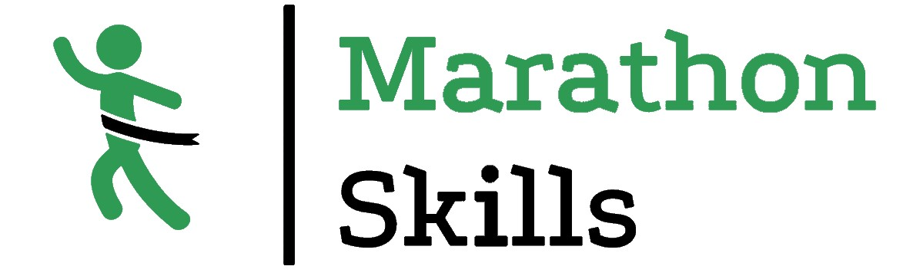

Вход
Регистрация
Кросс “Быстрый пёс”
Дата: 17.04.2022
Город: Владивосток
Страна: Россия
Внезапно, путь этого марафона будет проходить по мостам Владивостока. Наслаждайтесь видами города!
Выбор дисстанции:
5км
21км
42км
Время с начала марафона